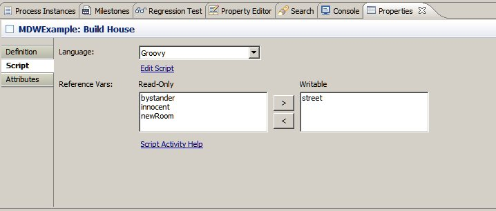
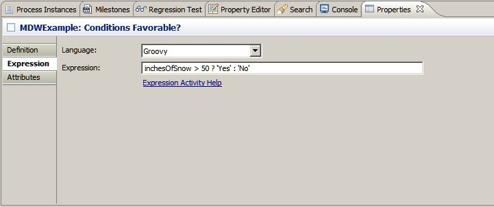

Script Activities
This document covers the MDW script activities (labeled "Execute Script" and "Expression Evaluator" in the Eclipse Toolbox view).
Supported Languages
MDW has built-in support for three different scripting languages:
In addition, you can customize to add support for any arbitrary scripting language as described below.
When you drag a scripting activity onto your process canvas, the first configuration attribute you'll specify is the the language to use.
In Eclipse Designer, this appears as a dropdown on the Script tab in the properties view for an "Execute Script" activity, or on the Expression tab for a "Script Expression Evaluator".
Groovy is the recommended general-purpose scripting language for MDW. With Groovy scripting you have the ability to reference classes and closures declared in separate libraries, leading to greater power and flexibility.
Also, if you have the Groovy Plug-In installed in your Eclipse, you can set breakpoints and debug your scripts and libraries in Eclipse.
If you have not installed the Groovy Plug-In in your Eclipse, follow this link to installed it.
JavaScript is supported via the Java 8 generic ScriptEngine mechanism.
Whichever scripting language you choose, the activities behave similarly, with the main difference being the syntax of the script itself.
The script content is stored as an attribute of your activity, so it can be modified, versioned and exported along with your process definition.
To edit your script, you can right click on the activity and select "Edit Script" from the context menu, or click on the "Edit Script" link in the properties view "Script" tab.
When you open a script for editing in Eclipse, the contents are saved to a temporary file in your workspace and are saved in the VCS when the process definition is saved.
This is important to remember since you'll want to reflect the latest changes when testing your processes. There is a preference option in Eclipse to disable the nag dialog so that you aren't reminded of this fact every time you save your scripts.
In your script you have implicit access to all of your process variables, as well as "runtimeContext" (which represents the containing activity's workflow
state). The runtimeContext binding is an instance of
ActivityRuntimeContext.
The syntax for accessing your process variables is simply varName in Groovy or JavaScript.
Execute Script Activity
In a script executor activity, you can both interrogate and assign values to your process variables.
Document variables are treated specially, however, and you'll need to identify which if any document (or Reference) variables are to be assigned values in your script:

You can control the return code from your script executor activity by returning a value from your script.
For example, if your activity has two outcomes labeled "VALID" and "INVALID", and your script has business logic that determines the outcome, you could implement as follows:
if (myVar != null && myVar.indexOf("something important") >= 0)
return "VALID";
else
return "INVALID";
Script Expression Evaluator
A script evaluator behaves much like a script activity except that it is normally a simple, one-line statement that evaluates to the return code which controls the outcome of the activity.
It is used for clarity to indicate a decision point in your process flow, where the outcome will depend on the runtime value of one or more process variables:

Script Libraries
Script libraries can contain reusable logic and utility classes that are accessible from all your script activities.
A script library artifact is really nothing more than a segment of code that resides in an MDW package.
Currently the only supported language for script libraries is Groovy.
Namespace resolution considerations dictate that the Groovy package name for your library components be the same as your MDW package name, and for this reason only MDW packages that comply with Groovy naming rules may contain script libraries.
To create a new script library artifact, right click on the MDW package in Process Explorer view, and select New > Script.
The newly-created script will automatically contain the appropriate package declaration. Here's an example:
package ValidationLibrary;
class TnValidator
{
boolean validate(tn)
{
println 'tn: ' + tn;
return true;
}
Closure getRegisterTnClosure()
{
return println('registering tn: ' + it); }
}
}
This resides in the MDW package ValidationLibrary and contains a class declaration for TnValidator.
To access this functionality from a script activity, you might include the following code:
import ValidationLibrary.*;
...
tnVal = new TnValidator();
valid = tnVal.validate(travelerTN);
tns = ["303-555-1212", "303-634-7861", 303-624-1952];
tns.each(tnVal.getRegisterTnClosure());
Script library artifacts are cached in the MDW runtime engine. They are compiled on-demand by the GroovyScriptEngine.
The first time any Groovy script is accessed, all script libraries are loaded and initialized. So the first execution may be slow, but subsequent executions should be very fast since the code has been pre-loaded and pre-compiled.
If you change a script or library and save it in Eclipse, the cache is automatically reloaded, and the next access will re-initialize the libraries.
Debugging Groovy Scripts
If you have the Groovy Plug-In http://dist.springsource.org/snapshot/GRECLIPSE/e4.6 installed on your eclipse, you can debug your script activity or library by opening the contents and setting a breakpoint according to the usual procedure in Eclipse.
This only works for local (not remote) workflow projects, and the server must be running in debug mode.
When a breakpoint is encountered, you can evaluate variables and change values just as you would when debugging Java code in Eclipse.
Note that in the context of a script activity, there is a wrapper class that contains your process variable bind values.
You can evaluate or watch a process variable value by entering the following expression in the Eclipse Display view:
this.getBinding().getVariable("myVariable")
this.binding.getVariables().get("modifiedXmlBean")
Custom Scripting Languages
You can add support in the MDW script activities for any language of your choosing by writing a lightweight wrapper around your script library.
To accomplish this, you need to implement either or both of two interfaces: ScriptExecutor and ScriptEvaluator, depending on which activities need to employ the language.
The Java 1.8 javax.script.ScriptEngine interfaces makes it easy to plug-in a script provider who complies with the JSR 310 specification.
You can use the MDW class JavaScriptExecutor as a guideline on how to implement your own executor.
Once you've implemented the executor, you'll need to add it to the MDWFramework.ScriptExecutors section of your ApplicationProperties.xml file.
Then you can make your language available in the dropdown choices in Designer by editing the activity implementor Description XML PAGELET content to include it in the "LANGUAGES" attribute list.
The details of configuring activity implementors are described here.